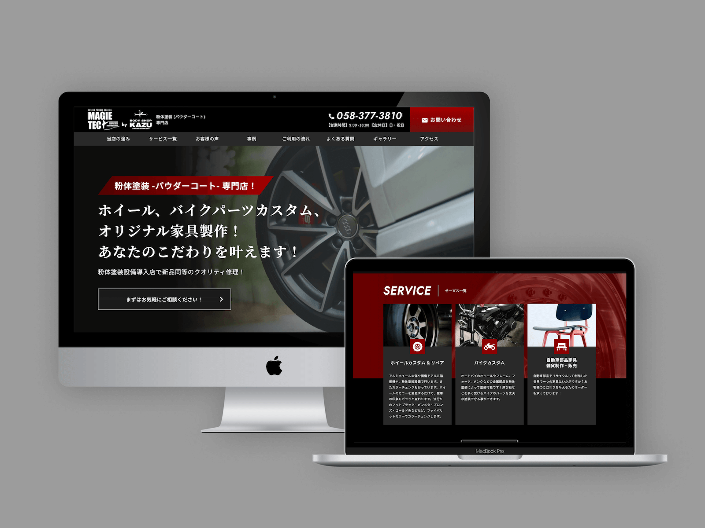
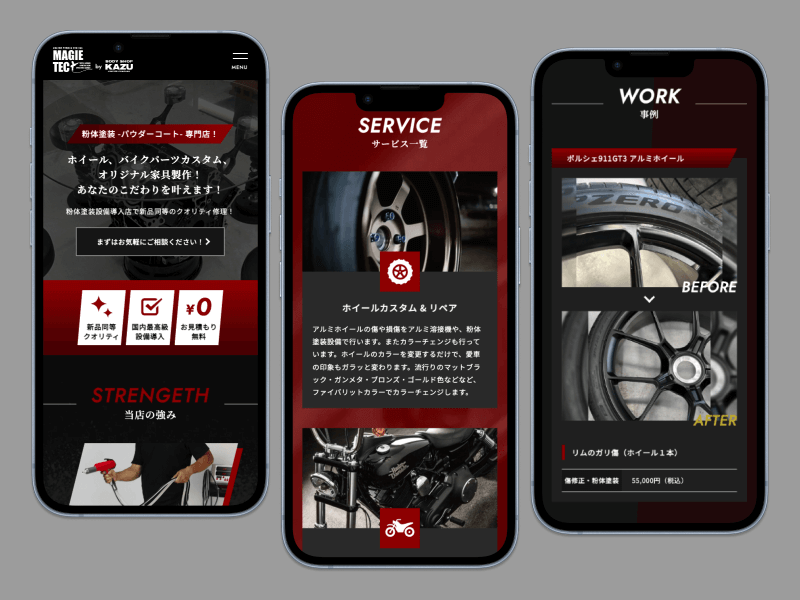

✴︎ 背景と課題
背景
新規事業の立ち上げ段階で、店舗としてのブランドイメージや方向性がまだ定まっていない状態でした。また、クライアントはWebに関してあまり馴染みがなく、「何をどう進めればよいかわからない」という状況でした。
課題
- 事業としてのブランドイメージが未確立
- サービス内容が伝わりづらい
- 今後、認知度を高めていきたい
→ Webサイトによって、事業の軸をつくる必要があると判断しました。
✴︎ 設計方針
1. 情報整理を前提とした構造設計
- 情報を「用途・目的別」に整理
- ページ構成・導線をシンプルに再設計
2. WordPress運用を前提としたデザイン
- 文字・画像差し替えでも崩れない設計
- コンポーネント単位でのUI設計
✴︎ 情報設計の工夫
ユーザーの不安を解消するために、以下の要素を組み込みました。
Instagram連携
- 「ギャラリー」セクションを設け、Instagram投稿を埋め込み
- 日常の様子や最新の情報が確認できる
修理事例のBefore & After写真
- 実際のサービス内容を視覚的に理解できる
サービス詳細,料金ページ
- 内容と金額を明示し、検討ハードルを下げる
FAQセクション
- 想定されるよくある質問とその回答を掲載し、初回利用時の不安を軽減
✴︎ ビジュアル・UI設計
ビジュアルトーン
クライアントからの要望「黒背景で、かっこいいイメージ」をベースに、
- 黒を基調とした配色
- アクセントカラーに深みのあるレッドを採用
- 角丸を使わず、シャープなUIで統一
一方で、親しみやすさや信頼感を損なわないよう、イメージ写真を効果的に配置し、かっこよさと安心感のバランスを意識しました。


✴︎ 実装
- レスポンシブ対応
- WordPressへの組み込み
- お問い合わせフォームの実装
- Instagram埋め込み実装
✴︎ 振り返り
ブランドイメージが曖昧な状態からスタートし、Webとして一貫した世界観を形にできた点。クライアントからもデザインについて好意的な評価をいただきました。